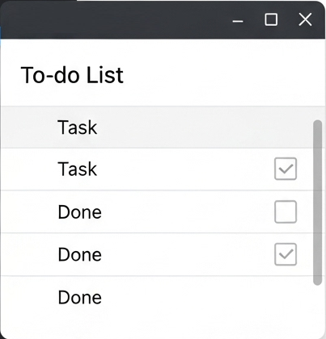
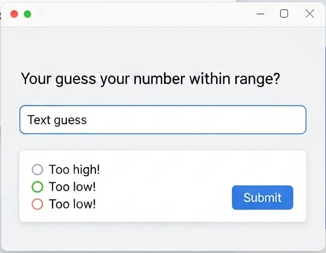
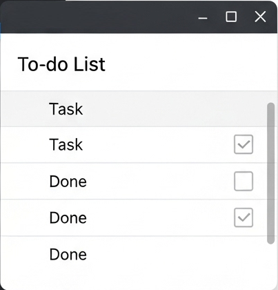
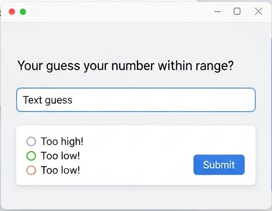

📷 Project Snapshots

Simple Calculator built with Java Swing.
Console-based To-Do List application.
Number guessing game showing random number generation and loops.
Here’s a list of beginner-friendly Java projects you can build to practice your skills:
Simple Calculator built with Java Swing.
Console-based To-Do List application.
Number guessing game showing random number generation and loops.